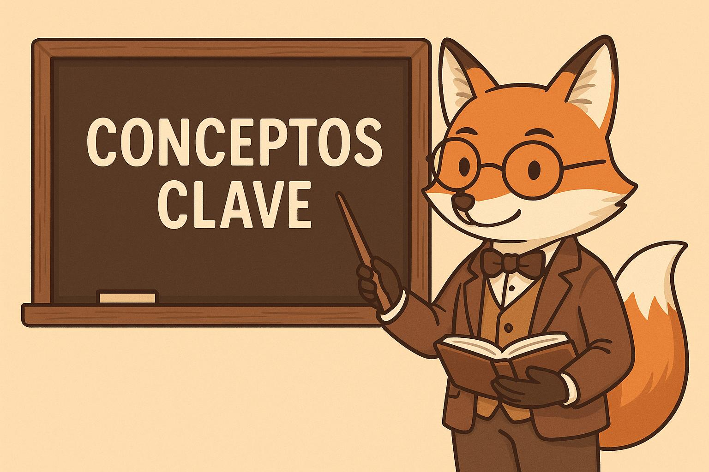

Conceptos Clave de Innovación Social
Innovación social implica acción, no solo pensamiento
Características de un proyecto de innovación social
Diagnóstico inicial
Reflexiones clave para el diagnóstico
Identificación de necesidades holísticas
Importancia del contexto
Definición clara del lugar
Identificación de recursos disponibles
Planteamiento del problema
Estructura del planteamiento del problema
Ejemplos de planteamiento de problemas
Desarrollo del proyecto
Responsables del proyecto
Actividades del proyecto
Listado de recursos necesarios
Presupuesto estimado
Cronograma detallado
Monitoreo y seguimiento
Evaluación final
Visualización del futuro deseado
Uso de herramientas creativas
×